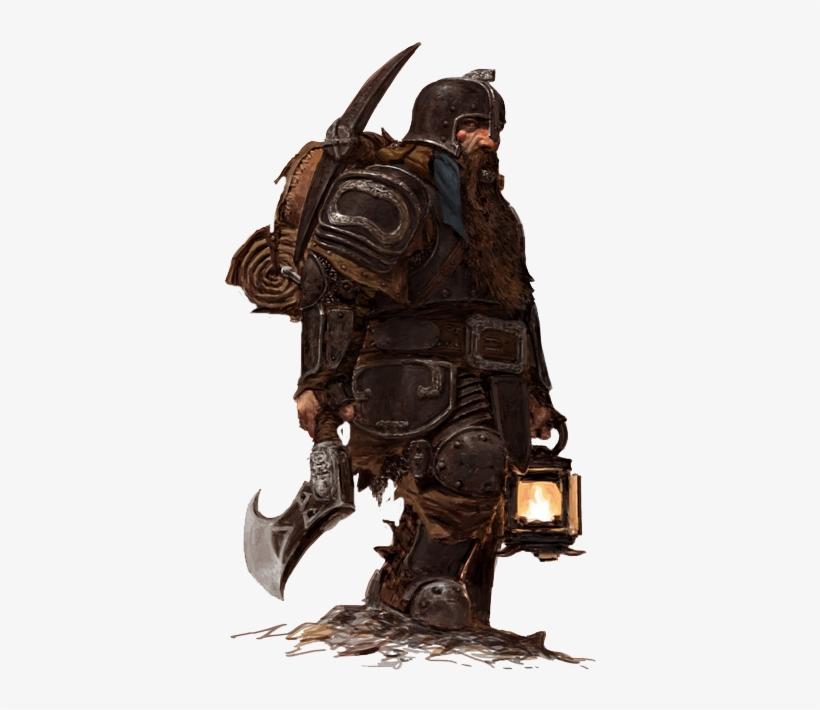

Home Novidades Classes Raças
Classes

Guerreiro
Os guerreiros são herois com muita vida e são ótimos para a linha de frente.
Mago
Os Magos são criados com poderes que dão muito dano, mas precisam de tempo.
Arqueiro
Os arqueiros são candidatos fortes para ignorarem as linhas de frente dos inimigos.
Ladrão
Os Ladrões acham sua força na velocidade em que atacam e nos criticos assustadores.
Clérigo
Clérigos são fundamentais, para proteger e curar suas equipes.
Feiticeiros
Feiticeiros são arautos das pragas e vão sempre dar debuff nos inimigos.
Relatórios
 Corrigido um bug no herói Fruskar, o Brabo em que sua vida inicial era de
Corrigido um bug no herói Fruskar, o Brabo em que sua vida inicial era de
250 para o normal 200
Herois
- Fruskar,o Brabo
- Lamir, Olho verde
- Marco,Corta-pescoço
- Brusk, O fogo vivo
- Sammy, a Bela
- Simon, mão preta